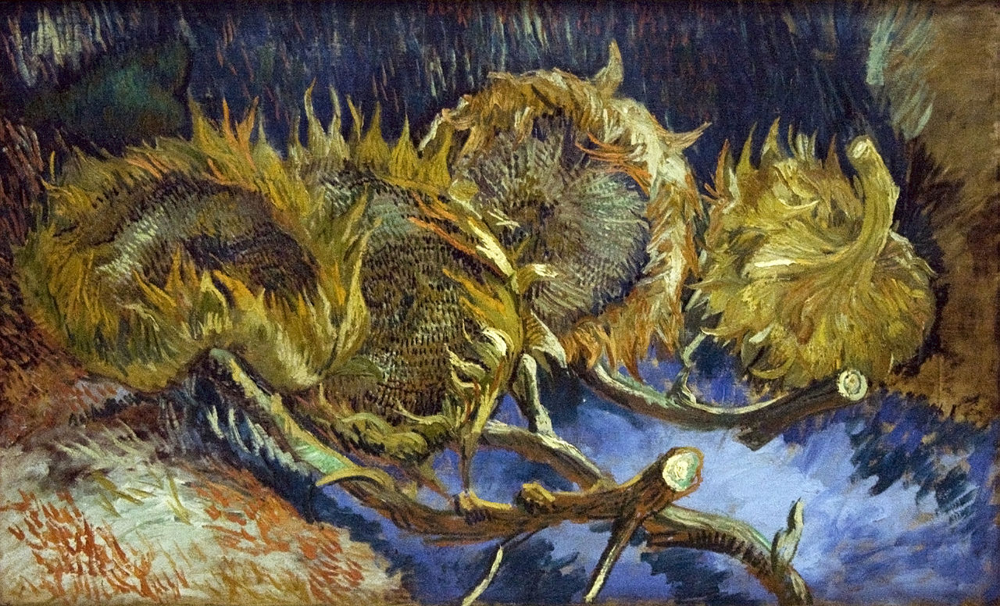
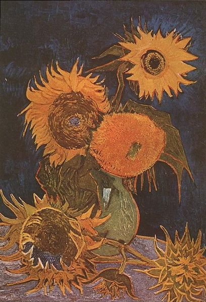
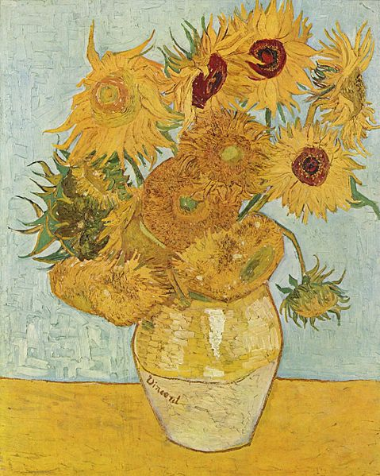
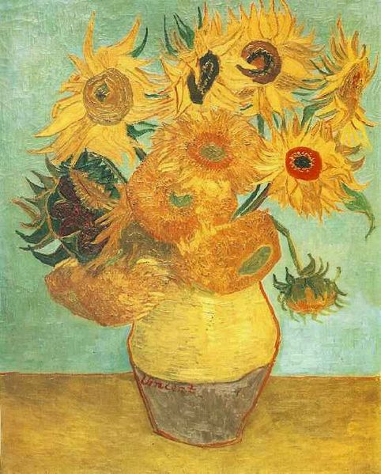
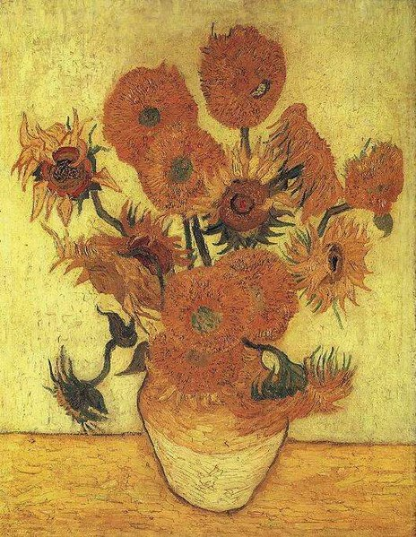
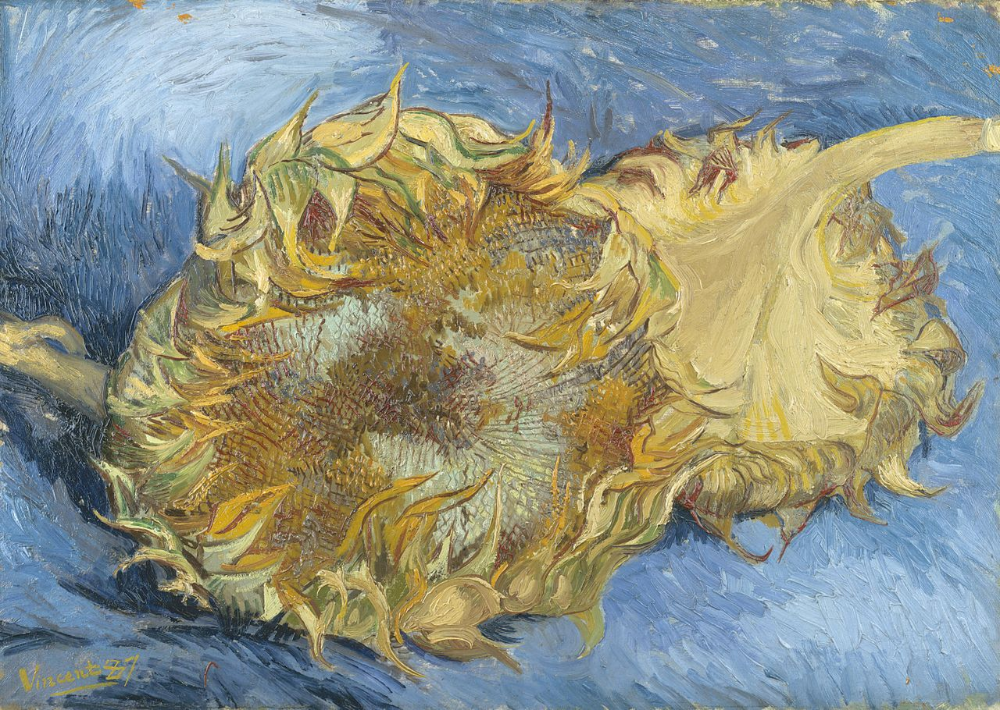

Vincent Van Gogh
«Признаюсь, не знаю почему, но глядя на звёзды мне всегда хочется мечтать»
Винсент Ван Гог
Художник-постимпрессионист из Нидерландов, автор портретов, натюрмортов, автопортретов, пейзажей. Винсента Ван Гога обуревали сильные эмоции вперемешку с тяжелыми психическими состояниями, и может быть благодаря этому он стал одним из самых значимых художников в мире. Он начал рисовать в 27 и стремился запечатлеть все, что видел вокруг себя. Он рисовал пылко и много, но его картины никто не признавал искусством. А он продолжал наносить на холст все новые и новые задумки. Результатом его жизни стали восемьсот полотен, причем более четырехсот из них он написал в последние три года перед смертью.






Ван Гог никому не пытался доказать, что он художник, у него совершенно отсутствовало тщеславие. Единственным человеком, которому он стремился это доказать, был он сам. Художник умер нищим, считая, что его работы не имеют художественной ценности. Зато сейчас в нем видят эпоху постимпрессионизма, а его полотна выставляются на аукционах по баснословной цене.
4 факта о жизни Винсента Ван Гога
Жизнь
Из-за неустойчивого психического состояния художник провел много времени в лечебнице при монастыре Сен-Поль-де-Мусоль. Это был один из самым плодотворных периодов в его творческой жизни. Здесь появились его знаменитые "Ирисы".
Тео Ван Гог
Младший на четыре года брат Винсента, Тео, был единственным человеком, которому мог довериться угрюмый и нелюдимый художник. Он также поддерживал его морально и финансово на протяжении всей жизни.
Смерть
Великий художник ушел из жизни по своей воле - он выстрелил себе в грудь из револьвера.
Наследие
Ван Гог написал 850 полотен.
Работы Винсента есть не только на родине художника — они разлетелись по всему миру. Желаете посетить один из них?
Оставьте Ваши контакты и наш менеджер свяжется с Вами в удобное для Вас время